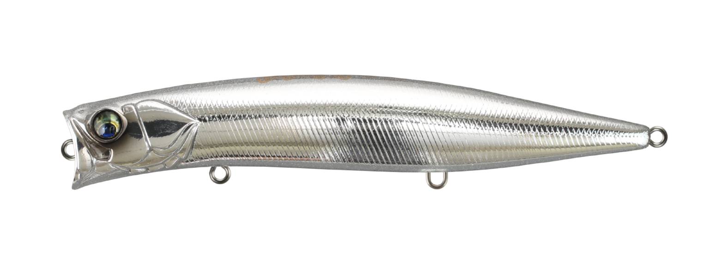
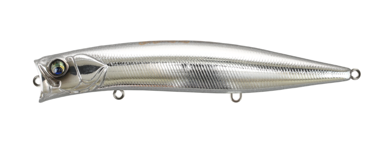
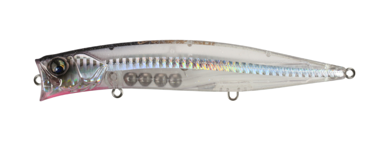
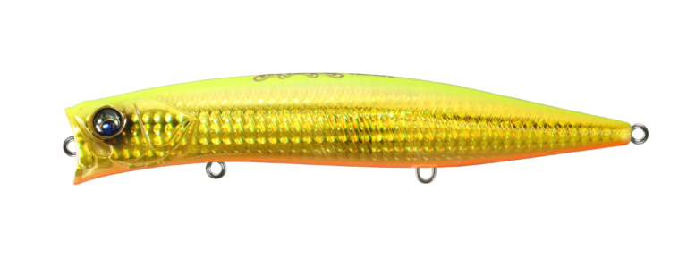
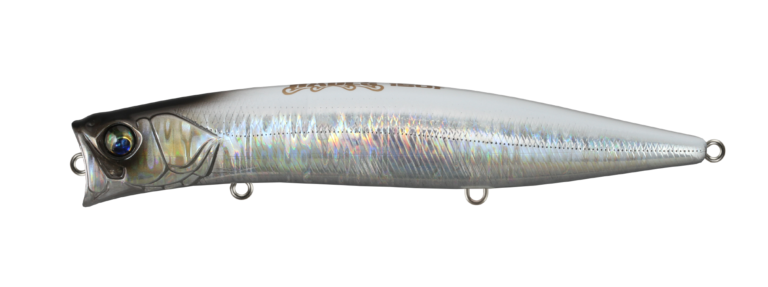

ハーデス150F
（HADES 150F）
ハーデス150F（HADES 150F）はBASSDAY（バスデイ）のシャローミノーです。
「どんなシチュエーションでも浅場を攻略できるミノー」というハーデスシリーズに、2026年秋に加わった150mmモデル。コノシロや大型のイワシ、落ちアユなど大きなベイトを表層に追い込んで捕食する魚に、存在感のあるシルエットで気づかせるのが最大の魅力です。

画像出典:バスデイ公式HP
スペック
- メーカー
- BASSDAY（バスデイ）
- タイプ
- フローティング（シャローミノー）
- 全長
- 150mm
- 自重
- 40.0g
- フック
- 太軸#2
- リング
- #4
- ターゲット
- シーバスなど大型ベイトを追う魚
- 価格
- 3,520円（税込）
- 発売
- 2026年秋
▼今すぐチェック

ハーデス150Fの特徴
大型ベイトパターンに合わせた150mm。「巻かないアクション」でも誘えるハーデスの大型モデル
-
大きなベイトに合わせた存在感のある150mm
小さなルアーではレンジが合っていても食い切らない、そもそも気づいてもらえない……という声から誕生。ローライトやナイトゲーム、濁りのある場所でも存在感を発揮する。
-
TSLと大型タングステン玉4個の高重量ウエイト
TSL（トーションスプリングロックシステム）を採用し、大型タングステン玉を4個使った高重量ウエイトを搭載。150mmのボリュームでも遠投しやすい。
-
ランカーを想定した太軸#2フック
ランカーサイズを想定し、大物対応のオリジナル太軸#2を標準装備。大型ベイトに付く大物とのファイトにも備えている。
ハーデス150Fの使い方
ハーデスシリーズの真骨頂は「巻かないアクション」。風や川の流れに乗せてナチュラルに誘い、リールを巻くか巻かないかの極スローリトリーブで、狙ったポイントへ送り込むのが基本です。
広い場所では、パイロットルアーとして遠投して大型ベイトに付く魚を探す使い方もオススメ。ベイトの群れの周りを、ゆっくり大きく見せて通します。
ハーデス150Fの得意な状況
コノシロや大型のイワシ、落ちアユなど、大きなベイトが表層に追い込まれている状況が最大の出番。
ローライトやナイトゲーム、濁りがある場所など、小さなルアーでは気づいてもらえない場面で選びたい1本です。
ワンポイント
流れのある川では、ラインを張りすぎずに流れに乗せるだけでもアクションします。巻きすぎず、流れに任せる時間を作るのがコツです。
ベイトが小さい時や、もう少し軽快に使いたい時は127F・75Fに持ち替えると使い分けがしやすくなります。
ハーデスシリーズの使い分け
| モデル | 全長／自重 | 得意な場面 |
|---|---|---|
| 75F | 75mm／11g | 小型ベイト・水面直下MAX40cm程度 |
| 127F | 127mm／25.3g | MAX70mの遠投で浅場を広く探る・レンジ20〜50cm |
| 150F | 150mm／40g | コノシロ・大型イワシ・落ちアユなど大型ベイト（本記事のモデル） |
ハーデスは75F・127F・150Fの3サイズ展開。ベイトのサイズでモデルを選び、150Fは大型ベイトパターンとランカー狙いを担う最大サイズだ。
オススメカラー
ハーデス150Fのカラーから、オススメを厳選して紹介します。

MH-372 メッキラメUVフラッシングの強いメッキ系。大型ベイトのギラつきを再現したい時に。

HH-490 ケイムラクリアフラッシュクリアボディにケイムラとフラッシュ。スレた魚にシルエットを控えめに見せたい時に。

LH-193 ゴールドチャートOB濁りやローライトに強いゴールドチャート系。存在感を出したい時に。

FL-292 ホワイトシャドーホワイト系のアピールカラー。ナイトゲームでもシルエットが出やすい。
画像出典:バスデイ公式HP
ハーデス150Fに似ているルアー
-
 ハーデス127F
バスデイ
詳細はこちら＞
ハーデス127F
バスデイ
詳細はこちら＞
同じハーデスシリーズの127mmモデル。MAX70mの飛距離で浅場を広く探る役で、ベイトが小さい時は127F、大きい時は150Fと使い分けられる。
-
 タイドミノースリム178F
DUO
詳細はこちら＞
タイドミノースリム178F
DUO
詳細はこちら＞
全長178mmのロングミノー。大きめのベイトを意識した魚に、長いシルエットでアピールする狙いどころがハーデス150Fと重なる。
-
 アイザー125F
ブルーブルー
詳細はこちら＞
アイザー125F
ブルーブルー
詳細はこちら＞
125mmのシャローランナー。広いシャローを探る先発役として、大型ベイトが見えない時はアイザー、見えたらハーデス150Fと組み合わせやすい。